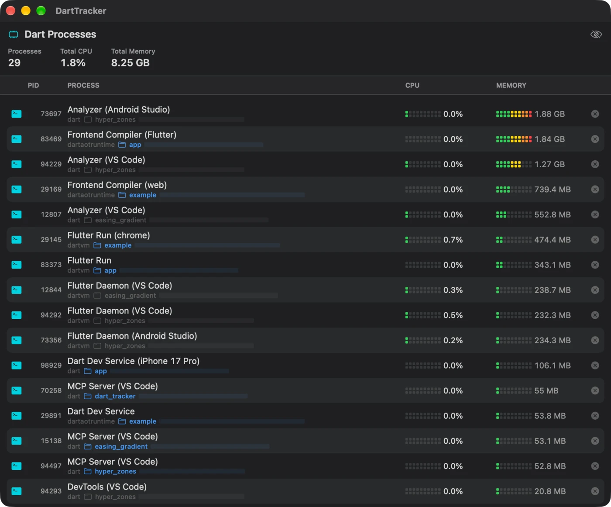
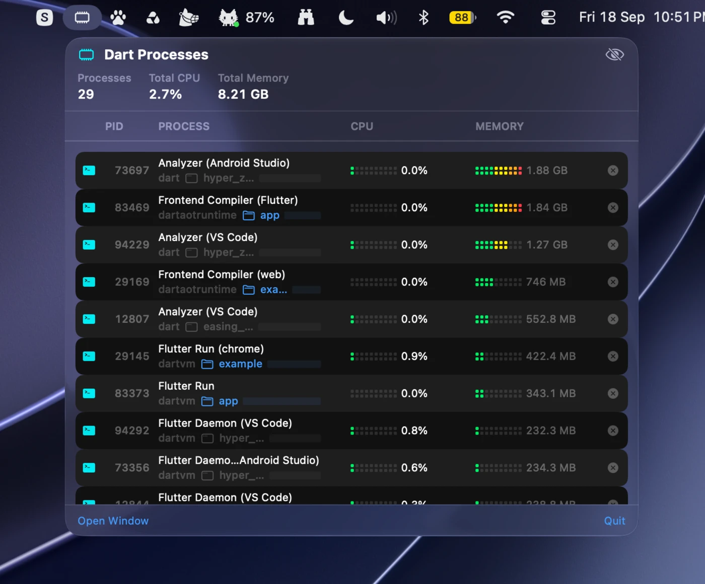

See every Dart process on your Mac, and what it is costing you
Free. Apple Silicon and Intel, macOS 14 or later
- Finds everythingdart, dartvm, dartaotruntime, flutter_tester and puro, every two seconds
- Real namesFrontend Compiler (Flutter), not another row called dartaotruntime
- Project awarewalks up to the nearest pubspec.yaml, click to reveal it in Finder
- Knows your editorasks the Dart Tooling Daemon which IDE window owns the rest
- CPU and memoryper process, sorted so the worst offender sits on top
- One-click quita clean SIGTERM, and the row is gone

